Touch sensing that plugs into the YAM gripper
Each finger is a cartridge: a flat 8 × 16 taxel pad under a replaceable TPU skin, its own readout board, and five pogo pins to the robot. It docks with two thumbscrews and keeps the stock fingertip position.
Design release v0.2. The geometry is checked against i2rt's YAM meshes. Nothing has been printed or run on a robot yet.
Need ENPIRE's thin nail and cradle? ENPIRE-T fits the same socket and carries 302 taxels, and ENPIRE-T Tip keeps the stock cradle and senses at the nail.
Press the pad to see what the finger reports. This is the contact face seen from the object, fingertip down; both fingers share this layout.
- Taxel
- Point at the pad
- Flat index
- –
- Row line
- –
- Column line
- –
- Above the tip
- –
- Total pressure
- 0
A flat bay instead of a curved fingertip
Unfolding the ENPIRE STL into a custom FPC kept failing. Its contact faces are not the problem, since the nail face is a plane and the cradle a straight extrusion. The detail on them is: 1 mm teeth far too tight for polyimide to follow, a lattice that flexes, and a narrow nail split by a groove.
This design moves the irregular shape into the printed core and the skin, and gives the sensor one flat face. The pad is a plain rectangle, and every trace leaves through the base, away from the narrow tip. ENPIRE-T takes the other route and keeps ENPIRE's shape.
The cartridge keeps the stock tool point at z = -144.65 mm, so existing configs and IK targets still work.
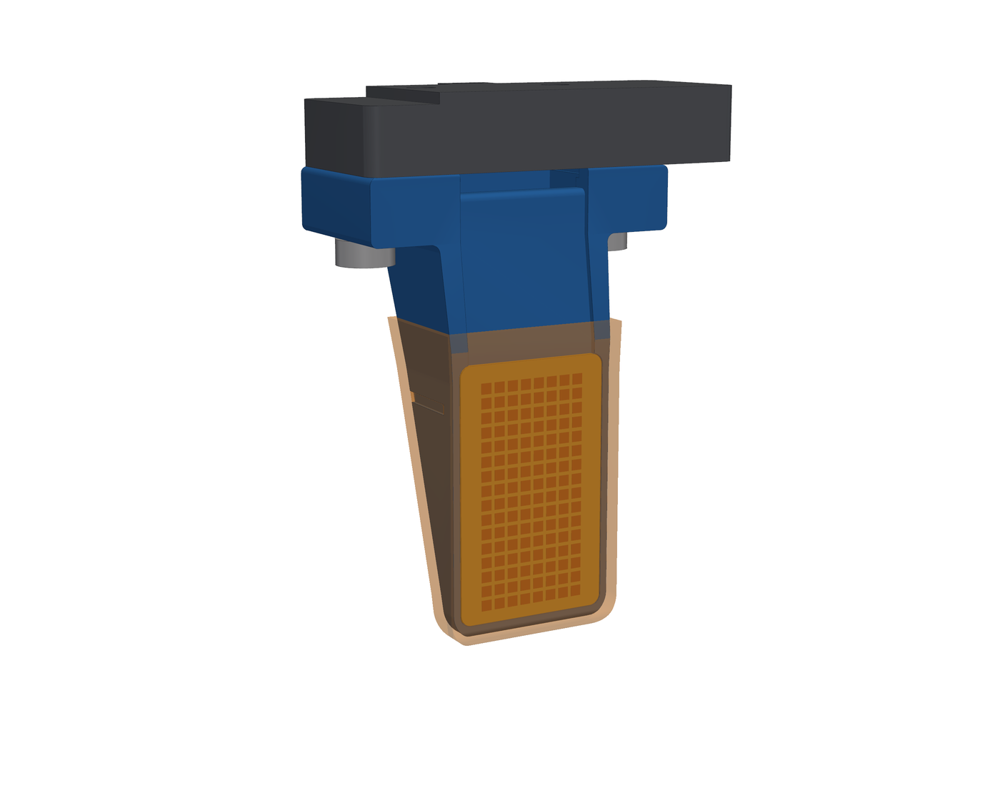
| From the tip | Thickness at the centre | Thickness over the skin lips | Stock thickness | Width | Stock width |
|---|---|---|---|---|---|
| 1.7 mm | 3.25 mm | 4.53 mm | 3.83 mm | 24.1 mm | 15.4 mm |
| 5 mm | 4.34 mm | 5.43 mm | 4.41 mm | 26 mm | 17.9 mm |
The tip is about as thin as stock but wider: that is the cost of eight columns. A six-column pad would bring the width to about 22 mm.
ENPIRE-T: the ENPIRE finger with 302 taxels
For tasks that need ENPIRE's thin grooved nail and its serrated cradle. ENPIRE-T is that finger rebuilt as a cartridge for the same socket, so one socket takes any of these fingers.
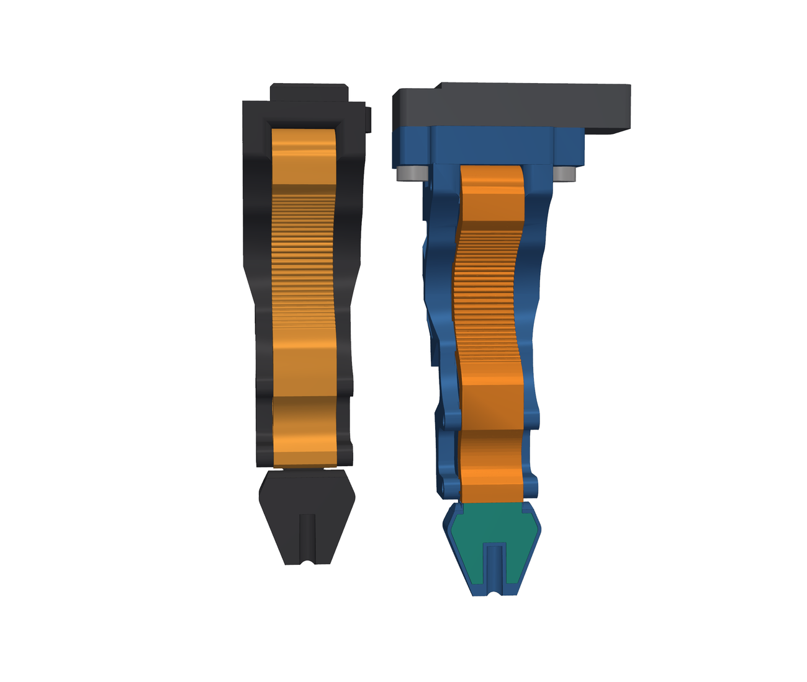
A flat laminate can follow both of ENPIRE's contact faces exactly, so ENPIRE-T keeps those faces and changes what sits on them.
The cradle becomes part of one rigid core, with a smooth seat 2 mm under the original surface. A strip of 246 taxels lies on the seat, under a 1.5 mm molded silicone skin that carries ENPIRE's teeth. The nail keeps its outside and gets 56 taxels around its groove, in a 0.7 mm pocket under a 0.2 mm film, flush with the original face.
One laminate runs from the flange down the cradle and onto the nail. Everything it touches unrolls exactly, so each taxel's position comes from the CAD and a finger needs no position calibration, only the usual zeroing.
| From the tip | Thickness | Stock thickness | Width | Stock width |
|---|---|---|---|---|
| 0.5 mm | 1.59 mm | 1.59 mm | 10.9 mm | 10.9 mm |
| 1.7 mm | 2.72 mm | 2.72 mm | 11.9 mm | 11.9 mm |
| 5 mm | 5.44 mm | 5.44 mm | 14.5 mm | 14.5 mm |
| 10 mm | 8.84 mm | 8.84 mm | 18.5 mm | 18.5 mm |
The tip is the stock tip. The cost is length: the shared socket puts the fingertip 8.5 mm lower than on a stock ENPIRE, 123.4 mm below the carriage, so update the tool point. The cradle also loses the lattice's give, and only the skin over it is soft. The one change to the outside is the 2 mm notch between the cradle and the nail, which is filled.
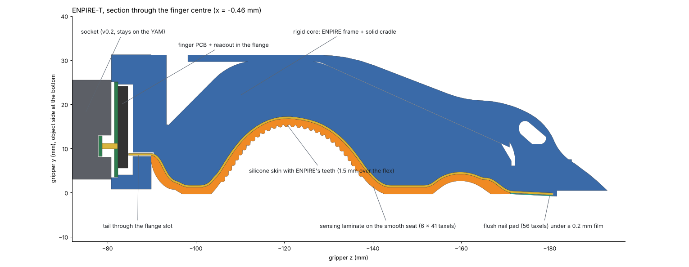
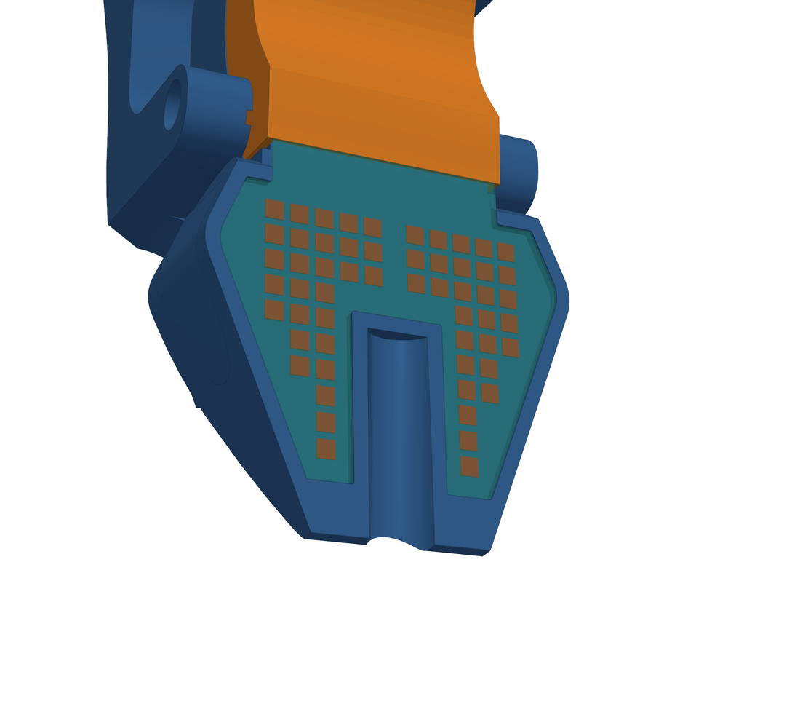
| Taxels | 302: 246 on the cradle (6 × 41 at 2 mm) and 56 on the nail (1.5 mm) |
|---|---|
| Scan lines | 58 rows × 16 columns, on two 2-layer flex sheets with Velostat between them |
| Covers | 1.5 mm molded silicone on the cradle and a 0.2 mm PU film on the nail, both replaceable |
| Readout | Finger PCB, 28.8 × 21.5 mm, in the flange; tails with 60 and 18 contacts at 0.3 mm pitch |
| Stream | Protocol v2, 620 bytes per frame, over the same five pogo pins |
- The fingers still meet nail tip to nail tip when the gripper closes on nothing, at 1.443 mm per jaw; stock ENPIRE meets at 1.443 mm.
- The cradle surface matches ENPIRE's to 0.005 mm at the 95th percentile, and the nail film lies exactly on the original nail plane.
- Over the full stroke the socket keeps its 1.3 mm to the opposite carriage, and everything below it stays at least 5 mm from the carriages and the housing.
- Walls are 3.3 mm behind the nail pocket, at least 1.45 mm around the dowels and 2.1 mm around the thumbscrews.
- The flex artwork passes its design-rule check, with 0.1 mm spaces and no crossing leads.
- In MuJoCo at a 15 N grip, the nail pads take 85% of the force on a 3 mm pin (8 taxels each), and the cradle strips take 73–77% of the force on a 32 mm rod (24 taxels each).
- The tightest bend in the laminate is 1.8 mm, where it leaves the flange, away from the taxels, and each tail has room for its bend and stiffener in front of its connector.
Limits, and what isn't verified yet
The nail faces are tilted 2.9° so the tips meet first, as on stock ENPIRE. A rigid flat part held at the tips therefore loads only the bare tip: in MuJoCo, a flat plate pinched there puts 0 N on the nail taxels. Round and soft objects, and anything held further up the nail, do reach them. The 12 mm between the last strip row and the first nail row has no taxels either.
Nothing has been printed, laminated or loaded. The finger PCB's readout still needs its layout, in 254 mm² of free board. Before a batch, test-print one core, trial-fit a skin on it, dry-fit both tails with paper cut-outs, and laminate on the core rather than flat. On the first laminate, look for wrinkling on the arch, where a few strip rows sit on bends of 2.6 mm radius.
ENPIRE-T Tip: the stock cradle and a sensing nail
When a task needs touch only at the nail, ENPIRE-T Tip senses there and keeps ENPIRE's compliant TPU cradle, which you print from the original file. It fits the same socket.
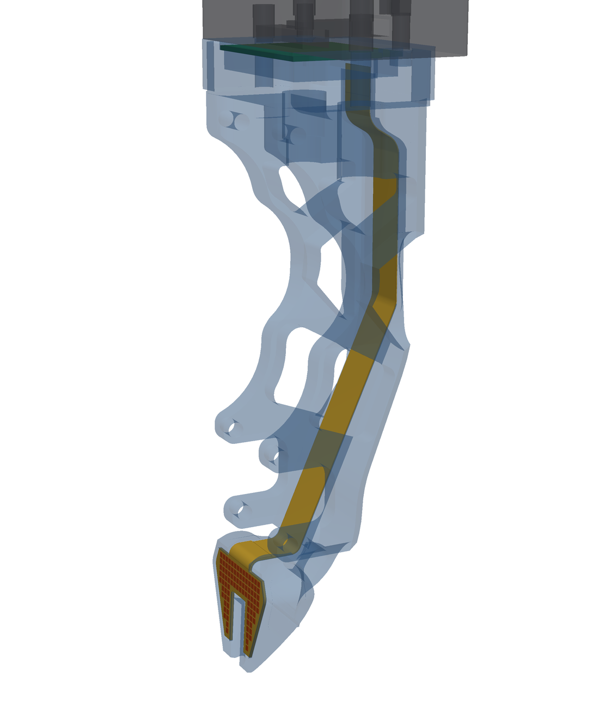
The nail is ENPIRE-T's: a flush pocket under a 0.2 mm film, here with 92 taxels at 1.25 mm around the groove. The frame is ENPIRE's, with a recess for the laminate along the back spine, the open back behind the insert's top corner closed, and the flange. On the contact side the one other change is at the nail root: over the laminate's width its corner is rounded off and the film-covered laminate wraps round it, up to 0.4 mm inside the stock surface and nowhere outside it, and the slit beside the insert is wider there.
The laminate's two sheets wrap round the nail root together and part at the foot of the slit beside the insert. From there their tails run side by side, one sheet thick, in a 0.2 mm recess along the spine, at least 0.22 mm clear of the insert, and rise into the flange at the back of the cavity. The finger PCB keeps ENPIRE-T's outline and pogo targets, with smaller connectors at the back of the cavity.
The taxels all sit on the flat nail, so their positions come straight from the CAD, and every surface on the route unrolls exactly, so the laminate fits without stretching.
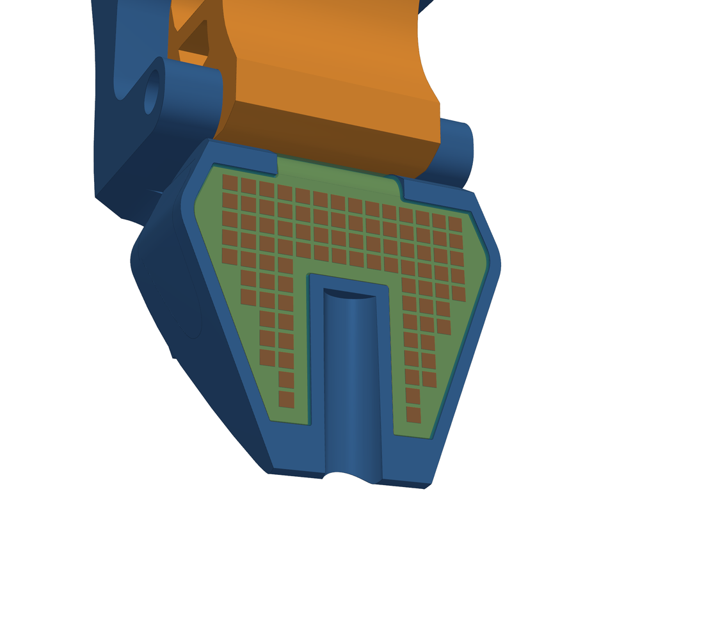
| Taxels | 92 on the nail at 1.25 mm; the cradle has none |
|---|---|
| Scan lines | 20 rows × 14 columns, on two 2-layer flex sheets with Velostat between them |
| Cover | A 0.2 mm PU film over the nail and round its root, replaceable |
| Readout | A finger PCB with ENPIRE-T's outline and 322 mm² free for the readout; tails with 22 and 16 contacts at 0.3 mm pitch |
| Stream | Protocol v2, layout 3, 200 bytes per frame |
- The fingers meet at 1.443 mm per jaw, as stock ENPIRE does (1.443 mm). The cradle is the stock insert, the nail film lies on the original nail plane, and the film covers the laminate round the nail root; above it, in the slit, the laminate's coverlay sits at least 2.1 mm behind the nail face.
- Over the full stroke the socket keeps its 1.3 mm to the opposite carriage, and the finger stays at least 5 mm from the carriages and the housing.
- Walls are 3.2 mm behind the nail pocket and at least 0.97 mm behind the laminate all along its route, with nothing of the core in front of it.
- The flex artwork passes its design-rule check, with 0.1 mm spaces. At the laminate's inner face its tightest bends are 1.8 mm for a single tail and 1.6 mm where both sheets go round the nail root, and each tail has at least 0.3 mm to spare in the cavity.
- In MuJoCo at a 15 N grip, a 3 mm pin, rod or square bar (edge first) pinched across the nails lands 100% on taxels, and they read the nails' normal force to within 0.7%, on a row or in the gap between rows. A 32 mm rod held in the cradle registers nothing, by design.
Limits, and what isn't verified yet
The nail faces are tilted 2.9°, as on ENPIRE-T, so a rigid flat part held at the tips loads only the bare tip (0 N on the taxels in MuJoCo). The taxels stop about 4 mm short of the tip: the last 3 mm of the nail is left bare, and beside the groove the narrowing prongs leave no room for another row before that. Nothing in the cradle is sensed.
The slit between the insert's lower end and the nail root stays open and, over the laminate's width, is wider than on stock ENPIRE: at least 1.09 mm from the film-covered laminate to the insert, against 0.72 mm from the stock root face. A hard grasp in the cradle's lower lobe pushes the insert toward it, so check on the first build that it doesn't pinch the laminate. Nothing has been printed, laminated or loaded. Before a batch, test-print one core, fit a stock insert to it, and dry-fit the tails with paper cut-outs.
Inspect the assembly
The right finger as it sits on the closed gripper. The left finger is the same part turned 180°.
Flat cartridge v0.2: 128 taxels on one flat pad.
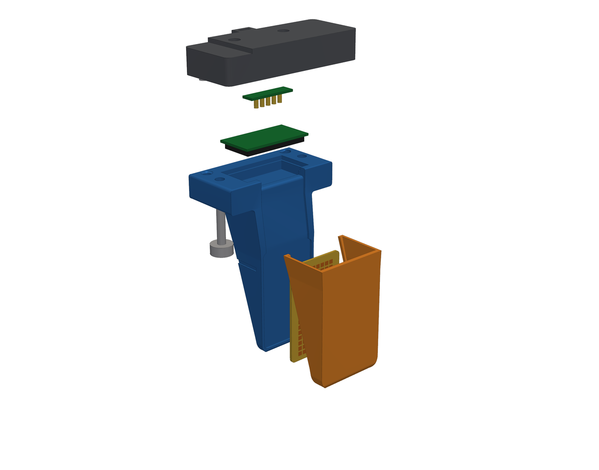
How it goes together
- The socket replaces the stock tip on the carriage, using the same heat-set inserts and screws, and carries a small pogo-pin board. It stays on the robot.
- The sensor pad, an FPC, Velostat and FPC laminate, sits flush in the cartridge's flat bay. Its two tails run up a groove and into the finger PCB.
- The finger PCB digitises all 128 taxels inside the cartridge and talks USB to the host over five pogo pins.
- The TPU skin presses onto the face. Ribs on its side walls snap into grooves, so payload shear can't walk it off the tip.
- To dock, push the cartridge straight up onto two dowels and hand-tighten two thumbscrews. Swapping a finger needs no tools.
128 taxels, digitised inside the finger
Rows and columns are copper electrodes on two FPCs with Velostat between them; each crossing is a taxel. The layout follows the FlexiTac V2 process.
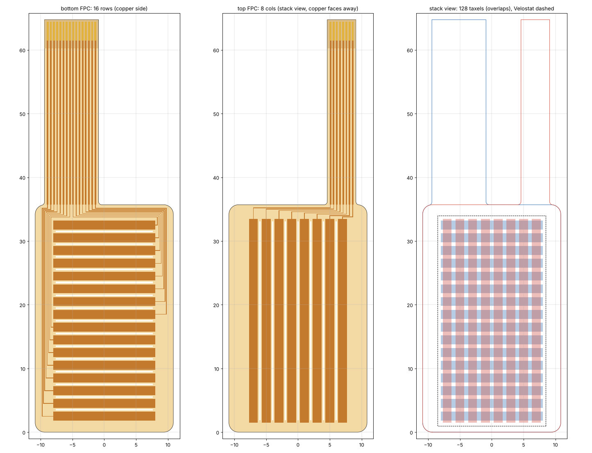
| Active area | 16 × 32 mm |
|---|---|
| Taxels | 16 rows × 8 columns at 2 mm pitch |
| Stack | FPC, Velostat, FPC: 0.8 mm, under a 1.2 mm TPU 85A skin |
| Tails | 8.5 mm (16 rows) and 4.5 mm (8 columns), cut length 29.1 mm |
| Readout | 200 Hz or more over USB-CDC; each finger reports its MCU's unique ID |
Pogo pins
The ground pins are longer, so ground connects first when you dock a cartridge with the robot powered.
Frame format
268 bytes per frame, little endian, row-major with row 0 at the tip. The checksum is CRC-16/CCITT-FALSE. Tail pins 9–16 carry rows 15 down to 8, and host/tactile_tools.py puts them back in order.
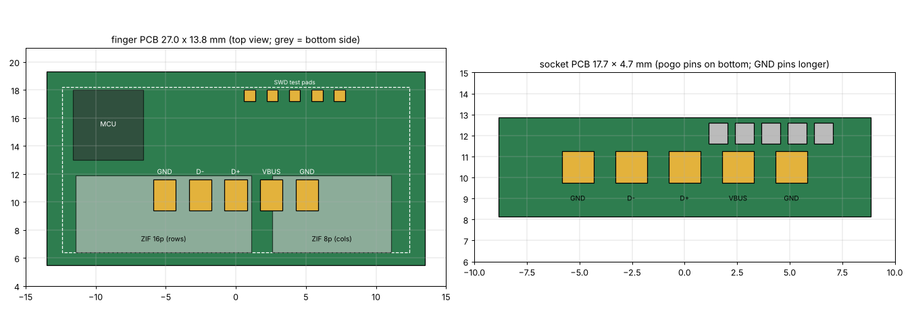
Checked against the robot's own geometry
Every number here is measured from the exported parts and i2rt's YAM meshes by cad/check_fit.py and cad/measure.py.
- At least 1.3 mm of clearance to the opposite carriage, and 6 mm to the housing, across the full 0–47.5 mm stroke.
- Walls of at least 1.8 mm behind the pad, and 2–2.5 mm around every insert and screw hole.
- The only overlaps are intended ones: the skins squeeze 0.25 mm each at full close, the pogo pins compress 0.7 mm, and the dowels press-fit.
- In MuJoCo, a 24 mm block held at a 15 N grip reads 15 N on each finger across 88 taxels.
- An independent review of v0.1 found the socket scraping the opposite carriage below about 23 mm of opening. v0.2 drops that wing by 1.5 mm, as the stock tip does.
Not verified yet
Nothing has been printed, fitted to a real gripper, or loaded. Pad sensitivity, drift, skin wear and the finger PCB firmware are still open.
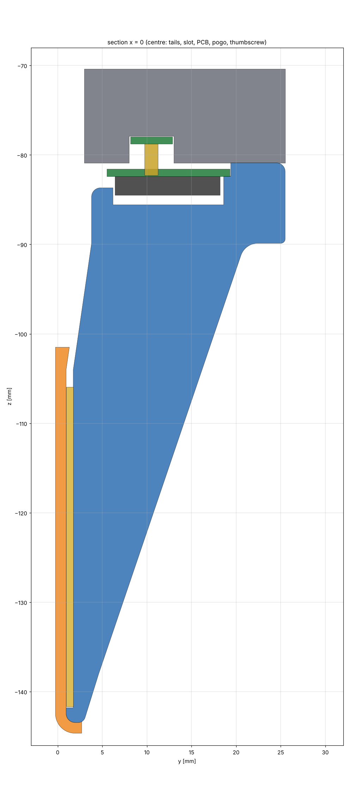
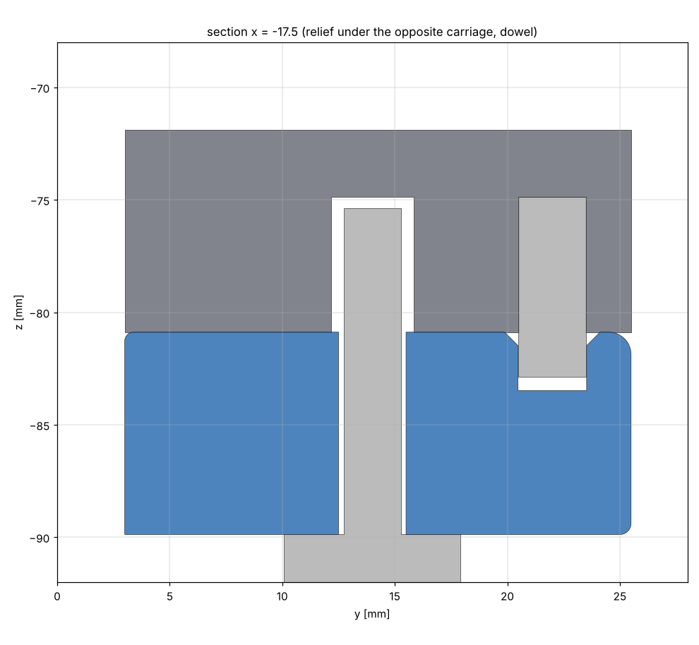
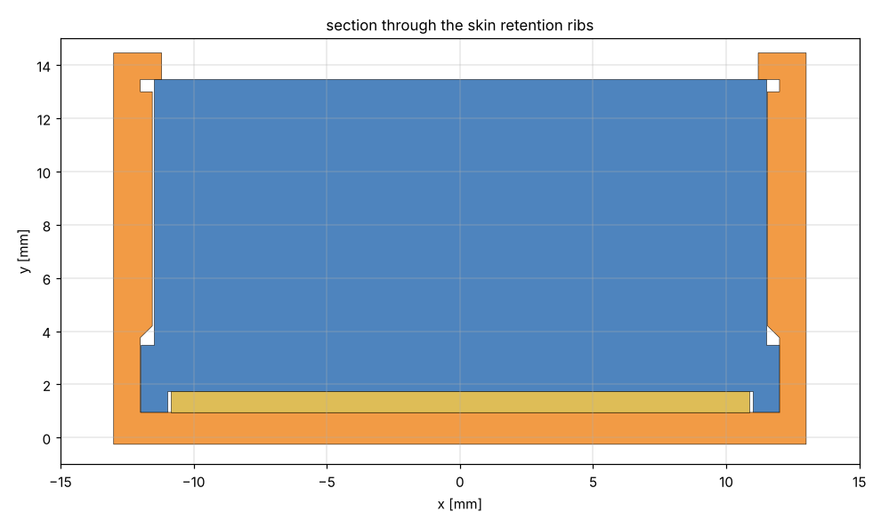
Before you print a batch
- Confirm that the stock tip screws go in from above, through the carriage, into the tip's heat-set inserts. The socket copies that arrangement.
- Measure a laminated pad. It should sit flush in the 0.8 mm pocket, or at most 0.05 mm proud.
- Check the ZIF keep-outs and the FPC entry height against the connectors you buy.
- Print one socket and one cartridge. Check the dowel fit, the skin's snap, and the 0.25 mm squeeze at full close.
Printing
Print the cartridge with the docking face on the bed and the finger pointing up, with no supports: only the PCB seat bridges. Use 0.2 mm layers, four or five walls and at least 40% infill, in PETG or PA-CF. The socket prints on its carriage face, and the skin on its contact face in TPU 85A.
Keep the gripper force limit at about 80 N or below.
Parts for one finger
| Part | Qty |
|---|---|
| Socket, PETG or PA-CF (12.1 cm³) | 1 |
| Cartridge, PETG or PA-CF (20.1 cm³) | 1 |
| Skin, TPU 85A (2.3 cm³) | 1 |
| Knurled M3 heat-set insert, Ø4.0 hole | 4 |
| Stock M3 tip screws (reused) | 2 |
| Ø3 × 8 mm dowel pin | 2 |
| M3 × 14 knurled thumbscrew | 2 |
| FPC pair, 0.2 mm, ENIG, with stiffener | 1 |
| Velostat, laminating sheet, Kapton tape, thin PSA | – |
| Finger PCB, 27.0 × 13.8 mm | 1 |
| Socket PCB with 5 pogo pins | 1 |
| High-flex USB cable with a service loop | 0.3 m |
Files
All of these are generated by the scripts in cartridge/cad. STEP opens in any CAD tool; STL and DXF are in millimetres. Frames are the i2rt gripper frame, right finger, gripper closed.
Rebuild everything
cd cartridge
pip install -r requirements.txt
make i2rt # i2rt meshes at the measured commit
make all # CAD, FPC, checks, sim, renders, ENPIRE-T, ENPIRE-T Tip, this pageThe host tools in host/tactile_tools.py decode the frame stream, lift taxels to 3D points for visuo-tactile fusion, and handle bench bring-up on a FlexiTac readout board.